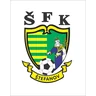
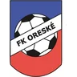

TJ Slovan Rovnosť Krajné
3.miesto z 15VI. liga Západ, 8 bodov za lídrom, FC Družstevník Rybky
Po dvoch postupoch za sebou je áčko v tejto súťaži nováčikom.
VI. liga Západ po 14 zápasoch
| # | Tím | Z | V | R | P | Skóre | B |
|---|---|---|---|---|---|---|---|
| 1 | 14 | 11 | 2 | 1 | 48:18 | 35 | |
| 2 | 14 | 9 | 1 | 4 | 37:21 | 28 | |
| 3 | TJ Slovan Rovnosť Krajné | 14 | 8 | 3 | 3 | 46:28 | 27 |
| 4 | 14 | 8 | 2 | 4 | 31:22 | 26 | |
| 5 | 14 | 8 | 2 | 4 | 24:14 | 26 | |
| 6 | 14 | 8 | 1 | 5 | 41:28 | 25 | |
| 7 | 14 | 7 | 3 | 4 | 28:26 | 24 | |
| 8 | 14 | 6 | 3 | 5 | 24:22 | 21 | |
| 9 | 14 | 4 | 5 | 5 | 22:28 | 17 | |
| 10 | 14 | 5 | 1 | 8 | 20:32 | 16 | |
| 11 | 14 | 5 | 1 | 8 | 29:31 | 16 | |
| 12 | 14 | 4 | 2 | 8 | 26:51 | 14 | |
| 13 |  ŠFK Štefanov | 14 | 4 | 1 | 9 | 22:33 | 13 |
| 14 |  FK Oreské | 14 | 2 | 1 | 11 | 16:39 | 7 |
| 15 | 14 | 2 | 0 | 12 | 14:35 | 6 |
Dva postupy za sebou
- 2024/25VIII. liga Juh ObFZ Trenčín87:25bez prehry: 19 výhier, 3 remízy
- 2025/26VII. liga ObFZ Trenčín98:31o bod pred Brestovcom